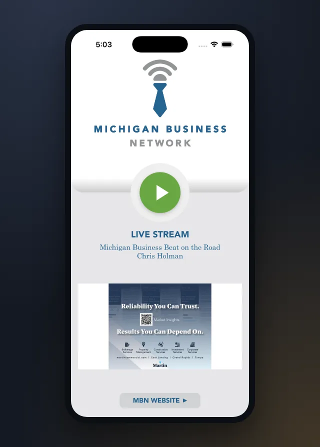
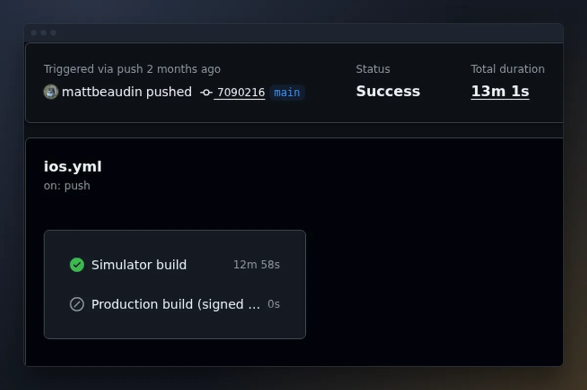
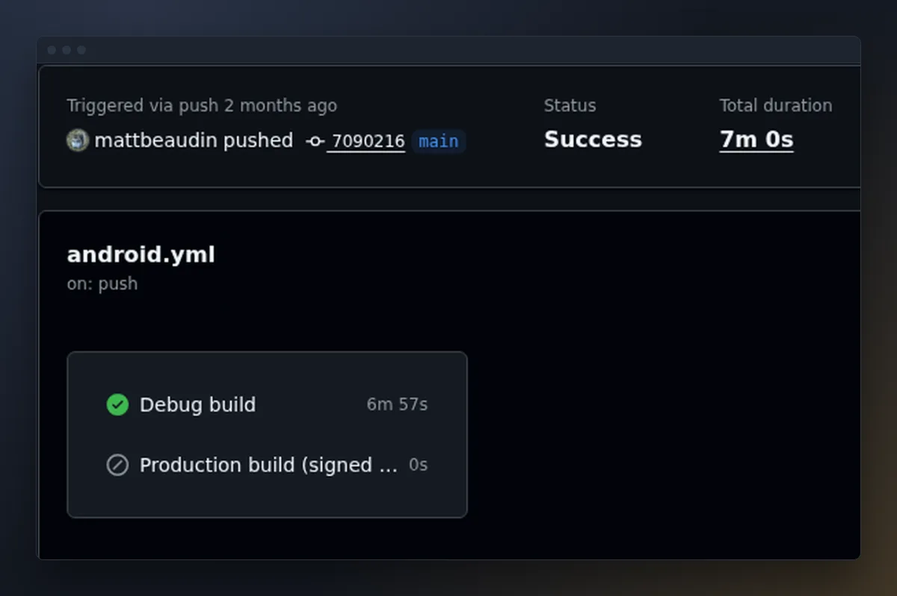

MBN Live



Situation
MBN Live is the live radio app for the Michigan Business Network, on Android and iOS. I first rebuilt it in React Native with Expo to bring an out-of-date app in line with app store requirements, and so I could write one app for both platforms instead of two. Over time Expo stopped being a good developer experience. Updates brought bug regressions and platform-specific issues, and the expo-audio package was the worst of it: on Android the stream took a very long time to load, and I had to downgrade Expo to work around it. A coworker recommended Kotlin Multiplatform with Compose, since he was using it on one of his own projects, so I migrated the app to it.
Task
- Migrate the app off React Native and Expo to Kotlin Multiplatform Compose
- Get away from the problems Expo and expo-audio were causing
- Make development and production builds easier and more reliable
- Stop the bug regressions, especially on new devices
Action
I was the only developer on the project, and the migration took about 48 hours of logged time. The UI, view model and now-playing API client live in shared Kotlin code, and only the audio player and a few small platform pieces are written separately for Android and iOS. Android plays the stream with Media3 in a background media service, and iOS uses AVPlayer. The sponsor ads rotate in a carousel, and an ad that fails to load is skipped right away. The API client has unit tests that run against a mocked HTTP client.
I make the iOS builds on my personal MacBook. To do that I had to update it to a version of macOS it doesn't support, using OpenCore Legacy Patcher. GitHub Actions also builds both platforms: every push and pull request builds a debug Android APK and an iOS simulator build, then launches the app in a headless simulator and takes a screenshot as a smoke test. That screenshot is the first image on this page. Signed production builds for both stores are triggered by hand.
The hardest part was rewriting the iOS audio player. Kotlin/Native's bindings for Apple's audio framework don't include the call that activates the audio session, so I wrote a small Objective-C shim to make it. Playback also had race conditions: the app tried to play before the stream was ready, and after a reload the old player could overwrite the new one's state. I fixed it by waiting until the stream is ready, running the player's status checks on the main thread, and ignoring updates from any player that isn't the current one. One of those fixes made the play button flicker back to paused while the stream buffered, so it now holds a loading state until audio actually starts. After that I added background and lock-screen playback with lock-screen controls.
Result
The app is running in production on Android and iOS. The client verified it before it was published, and so far there have been no crashes or bug reports. The migration is recent and time will tell, but so far it's been smooth sailing, and I'm much happier with the state of the repo now than I was before.
I used an agentic workflow for a lot of the work, and it sped up the process. The slow part was setting up the development environment at the start.